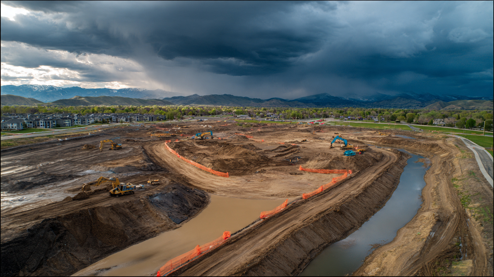

Construction Stormwater (SWPPP) Compliance SaaS for General Contractors
US construction spending hit a seasonally adjusted annual rate of $2.19 trillion in March 2026, according to US Census Bureau data. The Clean Water Act requires every construction site disturbing one acre or more to obtain an NPDES stormwater permit and maintain a Stormwater Pollution Prevention Plan. That means weekly inspections, post-rainfall documentation within 24 hours of any event exceeding half an inch, corrective action tracking for every failed BMP, and records that survive a regulator's audit. Most general contractors manage this entire workflow with clipboards, paper forms, and Excel files shared over text message. The federal penalty for a single violation: up to $70,117 per day.

The Problem
Dirt is the single largest pollutant entering American waterways by volume, and construction sites are the primary source of it. A single acre of active construction generates roughly 35 to 45 tons of sediment per year, compared to 0.5 to 1 ton per year from undisturbed forest, according to EPA estimates, and that sediment smothers fish spawning habitat, clogs municipal storm drains, degrades drinking water reservoirs, and carries with it the full cocktail of construction-site pollutants: concrete washout (pH above 12, caustic enough to kill aquatic life on contact), petroleum from equipment leaks, paint and solvent residues, and nutrient-loaded fertilizer from fresh landscaping.
The regulatory response is comprehensive but bureaucratically brutal. Under the Clean Water Act's NPDES program, any construction activity disturbing one or more acres of land requires a stormwater permit. The permit demands a Stormwater Pollution Prevention Plan describing every erosion control and sediment barrier on the site, their locations, maintenance schedules, and responsible parties. The operator must inspect the entire site at least once every seven days during active construction, and again within 24 hours of any rainfall event exceeding half an inch. Each inspection generates a written report documenting the condition of every BMP, any evidence of sediment discharge, corrective actions needed, and the names and qualifications of inspectors. Deficiencies must be corrected by the end of the next business day. All records must be retained for at least three years after the Notice of Termination.
How many sites does this affect? The Census Bureau does not publish a national count of NPDES construction stormwater permits. But the math is instructive. In 2025, the US authorized approximately 1.4 million residential building permits, per Census Bureau data. Add commercial, industrial, highway, utility, and infrastructure projects, and a conservative estimate puts the number of active construction sites requiring stormwater permits at any given time between 150,000 and 250,000 nationwide. California alone tracked roughly 7,000 active construction stormwater permits during the 2010-2011 recession, per California State Water Resources Control Board reports. In the current construction boom, that number is considerably higher.
The compliance burden is real and consequential. According to the Minnesota Pollution Control Agency, the five most common construction stormwater violations are: missing or inadequate soil stabilization, missing perimeter controls, missing or inadequate inlet protection, vehicle tracking sediment onto public roads, and unmaintained BMPs. These are not exotic failures. They are the predictable result of asking a 23-year-old assistant superintendent to walk a 40-acre site in the rain with a clipboard, check 200 silt fences, document deficiencies, communicate corrective actions to six different subcontractors, and file a compliant inspection report within 24 hours, all while also managing concrete pours and schedule conflicts.
What Happens When You Get It Wrong
EPA does not treat construction stormwater as a paperwork exercise, and the enforcement record from the past two years demonstrates exactly how seriously the agency pursues contractors who treat it as one. In April 2024, D.R. Horton, the nation's largest homebuilder, settled CWA allegations covering 16 sites across Alabama, North Carolina, and South Carolina under a consent decree that required a $400,000 civil penalty, a $400,000 Supplemental Environmental Project, and implementation of a comprehensive stormwater compliance program across the hundreds of sites Horton operates in EPA Region 4.
In January 2024, Swinerton Builders agreed to a $2.3 million penalty for stormwater violations at solar farm construction sites in Alabama, Idaho, and Illinois, plus mitigation actions to restore the Portneuf River, in a case that signaled EPA is watching the renewable energy construction boom with the same scrutiny it applies to homebuilders. Toll Brothers paid $741,000 in an earlier national settlement covering construction sites in 23 states, accepting mandatory company-wide stormwater controls and management oversight inspections as part of the deal.
Those are the cases that make the news, but below the headline level, thousands of smaller enforcement actions, state-issued Notices of Violation, stop-work orders, and insurance coverage disputes accumulate every year across the industry in a slow-moving avalanche of compliance failures that rarely gets aggregated into a single statistic. A stop-work order on a $50 million commercial project costs the developer roughly $150,000 to $300,000 per week in carrying costs, depending on the project's financing structure, and the stormwater compliance failure that triggered it probably involved a $40 silt fence that nobody checked after Tuesday's rain.
The Gap in the Market
Construction stormwater compliance software exists. None of it serves the general contractor well.
| Company | What They Do | What's Missing |
|---|---|---|
| Mapistry | Cloud-native environmental compliance platform. Founded 2013, 17 employees per PitchBook. Seed-funded (~$500K raised). Serves industrial facilities, construction sites, and air quality compliance. Growth-equity backed since 2023. Expanding to Canada and Australia. | Built for industrial environmental compliance first, construction second. Pricing and onboarding designed for EHS professionals at large industrial facilities, not for a site superintendent who needs to knock out inspections between concrete pours. No weather-triggered inspection scheduling. No automated SWPPP generation from site plans. |
| NPDESPro | Cloud-based NPDES compliance platform with all six EPA Minimum Control Measures. Mapping, scheduling, reporting, contact management. Now in version 3.0. | Built for municipal stormwater programs (MS4s), not construction operators. The customer is the city stormwater department, not the GC. Feature set oriented toward post-construction BMP tracking and public outreach reporting, not active construction site inspections. |
| SwiftComply | Stormwater management platform for MS4 permit holders. Esri integration, mobile field app, offline capability. Also covers industrial pretreatment and FOG. | Same MS4/regulator-side orientation. The customer is the municipality enforcing compliance, not the construction operator achieving it. No SWPPP management, no weather integration, no subcontractor routing. |
| Trimble Connected Site | Enterprise construction management platform. Stormwater compliance is one module within a broader site management suite. | Enterprise pricing, enterprise complexity, enterprise sales cycle. A regional homebuilder running 20 active sites does not need or want to deploy Trimble's full connected site platform to track silt fences. Integration requires existing Trimble hardware investment. |
| Fulcrum / iAuditor | Generic mobile inspection and data collection platforms. Construction companies use them to digitize SWPPP inspection checklists. | They digitize the form, not the workflow. No SWPPP document management. No weather-triggered scheduling. No regulatory-specific reporting. No corrective action routing. No compliance calendar. The user is still managing the compliance program in their head; they just have a nicer clipboard. |
The pattern is clear, and it reveals a structural gap in the market. Municipal-side tools serve the regulator who enforces compliance, not the contractor who must achieve it. Enterprise tools serve the megaproject with a six-figure software budget, leaving the mid-market operator with nothing purpose-built. Generic tools digitize the inspection form without managing the compliance program wrapped around it, which means the user is still tracking deadlines, routing corrective actions, and generating reports in their head or in a spreadsheet that nobody trusts. Nobody has built the platform for the 150,000+ active construction sites operated by general contractors, homebuilders, and developers who need turnkey SWPPP compliance without a six-figure software deployment or a full-time environmental compliance officer on the payroll.
The Solution
A purpose-built stormwater compliance SaaS for construction site operators, designed to be deployed in under an hour per site and operated by a superintendent with a smartphone:
1. SWPPP generator from site plan upload ($199 per site, one-time): The operator uploads a site plan PDF or CAD file, marks disturbed areas and drainage paths, and the system generates a permit-ready SWPPP document with BMP locations, maintenance schedules, and inspection routing. The SWPPP updates automatically as the site progresses through construction phases. Today, most SWPPPs are prepared by environmental consultants at $3,000 to $8,000 per plan. An automated first draft that gets operators 80% of the way there, with consultant review available as an optional add-on, collapses that cost.
2. Weather-triggered inspection scheduling ($89/site/month): The platform monitors NWS precipitation data for every registered site. When a rain gauge within the site's watershed records 0.5 inches or more, the system automatically generates an inspection task with a 24-hour deadline, pushes a notification to the assigned inspector's phone, and starts the compliance clock. No more missed post-rain inspections because nobody checked the weather. The system also manages the routine 7-day inspection cadence with automated reminders and deadline tracking.
3. Mobile inspection app with photo-verified BMP tracking: The inspector opens the app, walks the site following a GPS-guided route optimized for BMP locations, photographs each control measure, and taps pass/fail/needs-repair. GPS and timestamps are embedded in every photo. The system auto-generates the inspection report with all required fields pre-populated. Failed BMPs automatically create corrective action tasks routed to the responsible subcontractor, with a compliance deadline (end of next business day per CGP requirements) and escalation alerts if the deadline approaches without resolution.
4. Multi-site compliance dashboard: For operators running 10, 50, or 200 active sites, a single dashboard shows compliance status across the portfolio. Red/yellow/green indicators for each site. Overdue inspections, open corrective actions, upcoming permit milestones, approaching Notice of Termination deadlines. Exportable compliance reports formatted for state regulators, EPA, and insurance auditors. The dashboard answers the question that every construction executive dreads: "Which of our sites would fail a regulator inspection right now?"
5. Subcontractor accountability layer: When a corrective action is assigned to a subcontractor (repair a torn silt fence, clean sediment from an inlet, re-stabilize a graded slope), the subcontractor receives a notification, documents the repair with timestamped photos, and the system closes the loop. The general contractor has a complete chain-of-custody record showing when the deficiency was identified, who was notified, when the repair was completed, and photographic evidence of the fix. This is the documentation that wins arguments in enforcement proceedings and insurance disputes.
The Math: What a Single Violation Actually Costs
Take a mid-market homebuilder operating 30 active communities across three states, with an average of 200 lots per community. Total active sites: 30, each disturbing 20 to 80 acres. Total NPDES-permitted acreage: roughly 1,200 acres under active construction at any given time.
Scenario A: Paper-based compliance (status quo)
Each site superintendent conducts weekly inspections with a paper checklist, taking 2 to 4 hours per site per week, and post-rain inspections get missed roughly 30% of the time because nobody tracks rainfall automatically and on a busy pour day, checking silt fences after last night's storm falls to the bottom of the priority list next to everything else that's already behind schedule. A state inspector visits one site on a random Tuesday, finds three damaged BMPs with no documentation, discovers two post-rain inspections missing from the file, and issues a Notice of Violation before the superintendent even knows there was someone on site.
Direct costs begin accumulating immediately: an administrative penalty of $10,000 to $50,000 depending on the state and violation history, legal fees of $15,000 to $30,000 to prepare the response, and then the cascading second-order effects that dwarf the initial fine. The state flags the operator for enhanced scrutiny, triggering more frequent inspections across all 30 sites for the next 12 to 18 months. Insurance underwriters, reviewing the violation during the next renewal cycle, increase the environmental liability premium by 15 to 25%, which adds $40,000 to $80,000 annually across the portfolio for at least three renewal periods. If the violation involves an actual sediment discharge to a jurisdictional waterway, the federal penalty exposure jumps to $70,117 per day per violation, and on a site with multiple deficiencies that compounds into six-figure territory within two weeks.
Scenario B: Platform-managed compliance
Inspections are scheduled automatically, with post-rain inspections triggering within an hour of a qualifying rainfall event so that compliance clocks start before the superintendent even looks at their phone. The site superintendent spends 45 minutes walking the route with the mobile app instead of 3 hours with a clipboard, because the GPS-guided route eliminates backtracking and photo documentation replaces handwritten notes that nobody can read two months later when the regulator asks for records. Corrective actions route to subcontractors automatically with deadlines, and the compliance dashboard shows the regional VP that all 30 sites are current before the morning meeting starts.
Annual cost of platform-managed compliance across 30 sites:
SWPPP generation: 30 sites × $199 = $5,970 (one-time, vs. $90,000-$240,000 for consultant-prepared plans). Monthly platform: 30 sites × $89/month × 12 months = $32,040/year. Total annual: $32,040 recurring + $5,970 initial.
Cost avoided: A single prevented enforcement action saves $25,000 to $130,000 in direct costs. Insurance premium avoidance saves $40,000 to $80,000 annually. Labor savings from streamlined inspections (1.5 hours/site/week × 30 sites × 50 weeks × $45/hour fully loaded superintendent cost) = $101,250/year. Time saved on corrective action documentation and subcontractor coordination: at least another $30,000 annually. Total cost avoidance: $196,000 to $341,000/year on a $32,040 platform spend. ROI: 6x to 10x.
Revenue Model
| Revenue Stream | Amount | Notes |
|---|---|---|
| SWPPP generation (per site) | $199 | Automated from site plan upload. Replaces $3K-$8K consultant plans. 90%+ margin at scale. |
| Monthly compliance platform | $89/site/month | Inspection scheduling, mobile app, corrective action tracking, dashboard, reporting. Core SaaS. |
| Subcontractor module add-on | $29/site/month | Corrective action routing, subcontractor notifications, repair documentation. High-value for multi-trade sites. |
| Consultant review marketplace | 15% take rate | Environmental consultants review auto-generated SWPPPs and provide stamped approval. Marketplace connecting operators to qualified reviewers. |
| Insurance documentation package | $49/site/quarter | Formatted compliance reports for insurance auditors. Automated generation from platform data. Future: direct integration with environmental liability underwriters. |
Unit economics on a 30-site homebuilder: Annual revenue per account: 30 sites × ($89 + $29) × 12 months = $42,480, plus SWPPP generation ($5,970) and insurance packages ($5,880), yielding total first-year revenue of approximately $54,330 per account at a gross margin around 85%, which is typical for cloud SaaS with minimal COGS beyond hosting and weather data feeds. Customer acquisition cost via industry trade shows, builder association partnerships, and environmental consultant referrals runs approximately $5,000 per account, and with an average contract duration of 2.5 years aligned to the typical subdivision build-out timeline, the lifetime value reaches roughly $103,000, producing an LTV:CAC ratio of 20.6x that would make most SaaS investors uncomfortable for the opposite reason they're usually uncomfortable.
Market Size
TAM: Conservatively, 175,000 active NPDES construction stormwater-permitted sites at any given time in the US, derived from Census Bureau construction start data and state permit records. At $89/site/month × 12 months = $1,068/site/year: $187M/year in recurring platform revenue. Add SWPPP generation, subcontractor modules, and insurance packages: total addressable market approaches $300M/year.
SAM: Focus on residential homebuilders (the 200 largest US homebuilders operate an estimated 15,000 to 20,000 active sites), mid-market commercial GCs, and solar/data center developers (the fastest-growing construction segments). Approximately 60,000 sites operated by companies large enough to justify a software investment and sophisticated enough to care about systematic compliance. At blended $1,400/site/year: $84M/year.
SOM (year 3): 2,500 sites across 200 operator accounts. Blended $1,400/site/year = $3.5M ARR. 4.2% penetration of SAM. Hardware-free, no field sensors required, so customer onboarding is purely software.
Why Now
IIJA and IRA are flooding the construction pipeline. The Infrastructure Investment and Jobs Act provides $550 billion in new federal investment through fiscal year 2026, with 72.6% obligated as of January 2026. That money is turning into highway projects, bridge replacements, water infrastructure, and broadband builds, every one of which requires NPDES stormwater permits. The Inflation Reduction Act is accelerating solar farm construction, which disturbs hundreds of acres per project. Data center construction is projected to grow 25% in 2026 alone, per ConstructConnect estimates. Total US construction spending hit $2.19 trillion SAAR in March 2026, per Census Bureau data. More construction means more permits, more inspections, and more compliance exposure.
EPA enforcement is expanding, not contracting. The Swinerton solar farm settlement ($2.3M, January 2024) was the first major enforcement action specifically targeting renewable energy construction stormwater violations. EPA's FY2025 enforcement results included continued CWA stormwater actions. The CEMEX mining settlement ($310,000, July 2025) reinforced that industrial and construction stormwater remains a priority. State enforcement is also intensifying: California's Construction General Permit was reissued in 2020 with stricter Risk Level requirements, and Washington State reissued its Construction Stormwater General Permit effective January 1, 2026, with expanded monitoring obligations.
The labor shortage is making paper-based compliance unsustainable. The construction industry has roughly 400,000 unfilled positions, according to Associated Builders and Contractors. Site superintendents are stretched thinner than ever. Asking them to spend 3 to 4 hours per week on manual stormwater inspections, then another hour on paperwork, is a losing proposition when they already can't keep pace with scheduling and quality control. A platform that cuts inspection time by 50% and eliminates manual report generation is not a luxury; it's a prerequisite for compliance at current staffing levels.
Insurance underwriters are tightening environmental liability scrutiny. After several years of rising construction defect and environmental claims, commercial insurance carriers are increasingly requesting stormwater compliance documentation during underwriting and renewal. A builder with a documented, verifiable compliance program gets better terms. A builder with a filing cabinet of paper inspection forms and no way to prove post-rain inspections were conducted gets a surcharge or a non-renewal. The platform creates the documentation trail that underwrites lower premiums.
Startup Costs
| Category | Cost | Notes |
|---|---|---|
| Software engineering (platform + mobile app, 9 months) | $360K | 2 backend engineers, 1 frontend, 1 mobile developer. Cloud infrastructure, weather data integration, inspection workflow engine, reporting module. |
| SWPPP generation engine (6 months, parallel) | $120K | 1 engineer + domain consultant. PDF/CAD parsing, BMP library, state-specific template generation. Regulatory templates for top 15 states by construction volume. |
| Weather data integration + alerting | $30K | NWS API integration, rain gauge network data feeds, automated threshold detection, push notification infrastructure. |
| Regulatory and domain expertise | $50K | Part-time environmental compliance consultant (CPESC-certified) for 12 months. Template review, state permit requirement mapping, inspection checklist validation. |
| Pilot program (20 sites across 4 operators) | $25K | Subsidized access for first customers in exchange for feedback and case studies. Travel for on-site observation of inspection workflows. |
| Industry trade shows and marketing (year 1) | $35K | International Builders' Show, ENR FutureTech, state homebuilder association conferences. Booth, demos, travel. |
| Operating buffer (12 months) | $60K | Cloud hosting (AWS), weather data subscriptions, insurance, legal. |
| Total | $680K |
Limitations
The 175,000-site TAM estimate is derived from Census construction start data and extrapolation from California's state permit database, which is one of the few states publishing active permit counts. The actual number of active NPDES construction stormwater permits nationally is not tracked by any single federal or state database. EPA's Construction General Permit directly covers only areas where EPA is the permitting authority (roughly 4,000 to 6,000 sites); the vast majority of construction stormwater permitting is administered by authorized state programs, each with its own tracking systems. The true count could be significantly higher or lower than 175,000.
The $89/site/month pricing assumes willingness to pay at the site superintendent level, but procurement decisions at large homebuilders and GCs are made at the corporate level, which introduces longer sales cycles and enterprise pricing negotiations. The unit economics modeled above assume direct sales to mid-market operators. National homebuilders with 200+ sites will expect volume discounts that compress per-site revenue by 30 to 50%.
The SWPPP auto-generation feature faces a fundamental regulatory challenge: stormwater permits vary significantly by state, and in some cases by municipality. A SWPPP that satisfies California's Risk Level 2 requirements differs materially from one meeting Texas's TPDES Construction General Permit. Building state-specific templates for all 50 states plus territories is a multi-year effort. The initial product will necessarily cover a subset of high-volume states, limiting addressable market at launch.
The labor savings calculation assumes current superintendent hourly rates (~$45/hour fully loaded), but does not account for the learning curve of adopting a new digital workflow on active construction sites where conditions are chaotic and phone screens are often unreadable in direct sunlight or rain.
Strongest Counterargument
Procore could add this in a quarter, and anyone building in construction compliance software needs to reckon with that possibility honestly. Procore Technologies (NYSE: PCOR) is the dominant construction management platform with over 16,000 customer accounts and $1.0 billion in 2025 revenue, and they already manage project documents, field inspections, quality checklists, and subcontractor coordination for construction sites across every major market in the country. Their mobile app is already in the superintendent's pocket, which means adding a stormwater compliance module, weather-triggered inspection scheduling, and a SWPPP document manager would be a natural product extension that leverages their existing user base, field data infrastructure, and sales organization at an incremental customer acquisition cost that rounds to zero.
Procore has been aware of stormwater compliance as a pain point for years, and their marketplace already includes third-party integrations with environmental consultants while their quality and safety modules support configurable inspection checklists that get them partway there. The gap between "configurable inspection checklist" and "purpose-built stormwater compliance program" is narrower than it looks from the outside, and if stormwater compliance SaaS proves to be a meaningful revenue category, Procore can build or acquire its way into the market with a speed and distribution advantage that no startup can match on its own.
The counterpoint: Procore's strategic focus for the past three years has been financial management (invoicing, lien waivers, insurance) and preconstruction (estimating, bidding). Environmental compliance is regulatory plumbing, not the kind of product that drives new logo acquisition or upsell revenue for a company optimizing for net revenue retention. Procore's incentive is to make their platform sticky through features that touch every project stakeholder daily. Stormwater inspections touch one person (the superintendent) once a week. The strategic value to Procore is low relative to the engineering investment in 50-state regulatory template maintenance, weather data integration, and the domain expertise required to validate inspection workflows against evolving CGP requirements. More likely outcome: Procore builds a generic "environmental compliance" checklist template, declares the problem solved, and the actual compliance professionals continue buying purpose-built tools because the generic template doesn't generate compliant SWPPPs, doesn't trigger post-rain inspections, and doesn't route corrective actions with regulatory deadlines. That gap is the startup's moat.
What You Can Do
If you're a general contractor or site superintendent: Before your next project breaks ground, audit your stormwater compliance workflow. Count how many post-rain inspections your team actually completed in the last 90 days versus how many were required. If the numbers don't match, you have a documentation gap that will cost you if a regulator visits. At minimum, set up automated weather alerts for your project sites using a free service like Weather Underground, and create a shared calendar event for every required inspection with a 24-hour hard deadline. It's not software. It's not elegant. But it's better than hoping someone remembers to check the rain gauge.
If you're a construction tech builder: Start with 5 pilot sites on active residential subdivisions in a single state with a well-documented CGP (Texas, Florida, or North Carolina are strong candidates due to high construction volume and clear permit requirements). Build the weather-triggered inspection scheduler first. That single feature solves the most expensive compliance failure: missed post-rain inspections. The SWPPP generator is the second product, not the first. Get the inspection workflow reliable and trusted before attempting to automate the planning document.
If you're an environmental consultant who writes SWPPPs: This platform is not your enemy; it's your distribution channel. You currently write SWPPPs for $3,000 to $8,000 each and lose the client until the next project. A marketplace model where you review auto-generated SWPPPs for $500 to $1,000 each, with volume guaranteed by the platform, generates more annual revenue on less effort while keeping your professional stamp on every document. The platform does the data entry. You do the judgment.
The Bottom Line
There are more construction sites actively permitted for stormwater discharge in the United States right now than at any point since the Clean Water Act created the NPDES program. Infrastructure spending is at historic levels. Data center and solar farm construction is doubling annually. EPA enforcement against construction stormwater violations is accelerating across all project types. And the people responsible for compliance at the site level are using the same paper-and-clipboard workflow they used in 1995, while managing more sites with fewer experienced personnel than the industry has ever attempted. The regulatory framework is clear, the penalties are severe, the compliance workflow is well-defined, and the incumbents are either serving the wrong customer (municipalities instead of contractors), solving the wrong problem (form digitization instead of program management), or priced for the wrong market (enterprise megaprojects instead of the 150,000 mid-market sites where most violations occur). This is not a technology problem. Every component exists: weather APIs, mobile inspection tools, PDF generation, GPS photo tagging, cloud dashboards. The missing piece is a company that assembles them into a product a regional homebuilder can deploy on Monday and use to pass a state inspection on Friday.